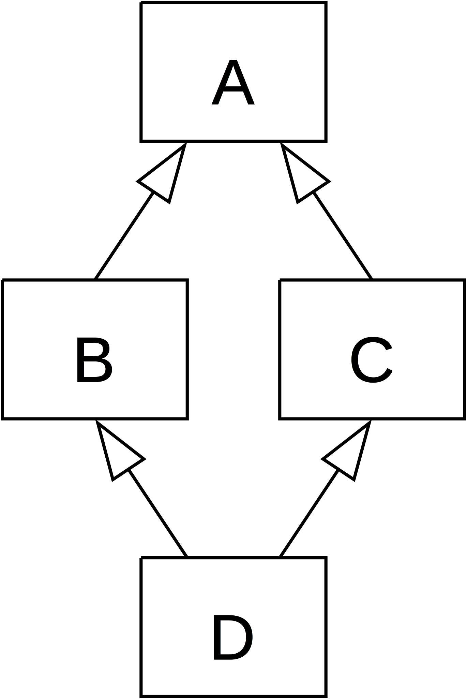

Kezdetek
1981 - Smalltalk es az OOP
1977 - John Backus: Can Programming be liberated from the von Neumann Style?
1950-197x - Funkcionális programozás (Lisp, ML, FP)
Modell?
Az OOP tükrözi az emberi gondolkodást
Az OOP szebbé, kezelhetőbbé teszi a kódot
((BattleNotificationSender)
BattleResourceMediator.getMediatorInstance().getResource(
BattleParticipant.PROXY_PARTICIPANT,
BattleResource.BATTLE_NOTIFICATION_SENDER)).sendNotification(
((BattleNotificationBuilder)
(BattleResourceMediator.getMediatorInstance().getResource(
BattleOrganizer.getBattleParticipant(Battle.Participant.GOOD_GUYS),
BattleResource.BATTLE_NOTIFICATION_BUILDER))).buildNotification(
BattleOrganizer.getBattleState(BattleResult.BATTLE_LOST),
BattleManager.getChainOfCommand().getCommandChainNotifier()));Tényleg?!
Az OOP világában az Igék felelősek minden munkáért, de lenézi őket mindenki, ezért számukra nem engedélyezett, hogy valaha is szabadon járjanak, önmagukban. Ha egy Ige a nyilvánosság elé lép, akkor azt csak egy Főnév társaságában teheti meg.
Airplane.fly()
Door.open()
file.write()
Vigyük ki a szemetet!
Kiveszem a szemetest a mosogató alól
Kiviszem a szemetesládáig
Beleöntöm abba
Visszamegyek a házba
Megmosom a kezem
Leülök a kanapéra
Folytatom amit ezelőtt csináltam
szemetes = mosogato.alattaLevoDolgok().keres('Szemetes');szemetes.megfog();
szemetes.kivisz(Szemeteslada.pozicio());
szemetes.kiont(Szemeteslada.teto.felnyit());
en.megy(Haz);
en.megmos(en.kez);
en.leul(Kanape);
en.folyat(en.AkarmitIsCsinaltam);
szemetes = en.megkeres(szemetes, mosogato_alatt)
en.megfog(szemetes)
en.kivisz(szemetes, szemeteslada)
en.kiont(szemetes, szemeteslada)
en.megy(haz)
en.megmos(en.kez)
en.leul(kanape)
en.folytat(en.akarmitIsCsinaltam)
szemetes = megkeres(szemetes, mosogato_alatt)
megfog(szemetes)
kivisz(szemetes, szemeteslada)
kiont(szemetes, szemeteslada)
megy(haz)
megmos(kez)
leul(kanape)
folytat(akarmitIsCsinaltam)
OOP nyelvek
Csupasz Ige nincsen
Kompromisszum
Inkonzisztencia
Leszármazás
A gyémánt probléma

class A {
public methodA() { /* ... */ }
}class B extends A {
public methodA() { /* ... */ }
}class C extends A {
public methodA() { /* ... */ }
}class D extends B, C {
}D test = new D(); test.methodA();
Interface burjánzás
interface Dateable {
Long to-ms (Object time);
}class DateableNumber extends Number implements Dateable {
Long to-ms (Object time) {
return (Long) time;
}
}class DateableDate extends Date implements Dateable {
Long to-ms (Object time) {
return (Long) ((Date) time).getTime ();
}
}class DateableCalendar extends Calendar implements Dateable {
Long to-ms (Object time) {
return ((DateableDate)((Calendar) time).getTime ()).to_ms ();
}
}(defprotocol Dateable (to-ms [time]))
(extend Number
Dateable
{:to-ms identity})(extend Date
Dateable
{:to-ms #(.getTime %)})(extend Calendar
Dateable
{:to-ms #(to-ms (.getTime %))})Egy magasabb Rend
(filter even? (range 10))
; => (0 2 4 6 8)
(map (comp - (partial + 3)
(partial * 2))
[1 2 3 4])
; => (-5 -7 -9 -11)(iterate inc 5 ;=> (5 6 7 8 9 ...)
Makrológia
(defmacro when [test & body] `(if ~test (do ~@body)))
(defmacro unless [pred a b] `(if (not ~pred) ~a ~b))
(defmacro ->
([x] x)
([x form]
(if (seq? form)
`(~(first form) ~x ~@(next form))
(list form x)))
([x form & more]
`(-> (-> ~x ~form) ~@more)))(-> 1)
;=> 1
(-> 1
str);=> (str 1)
(-> 1
(+ 2));=> (+ 1 2)
(-> 1
(+ 2)
(* 3));=> (-> (-> 1 (+ 2)) (* 3))
;=> (-> (+ 1 2) (* 3))
;=> (* (+ 1 2) 3)
Gyász
Megkötött kezek miatt
Korlátozó primitívség
Felesleges erőfeszítések
Fejlődést akadályozó elem
Zsákutca, melyen túlhaladt a világ
Hűtlen a kezdeti elvhez
Mutációt megengedő
Célját nem érheti el
Kerülőutak!
Frameworkök
Mockolás
Leszármaztatás
Elveszett produktivitás
Kifordított gondolkodás
Lefokozott igék
Kompozíció helyett interface és osztály burjánzás
Felborult a rend.